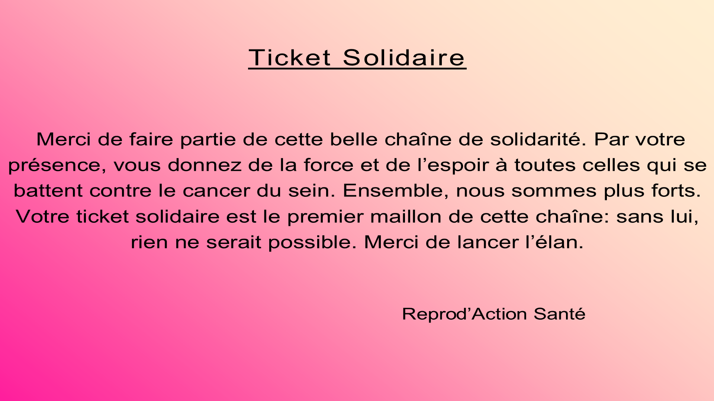
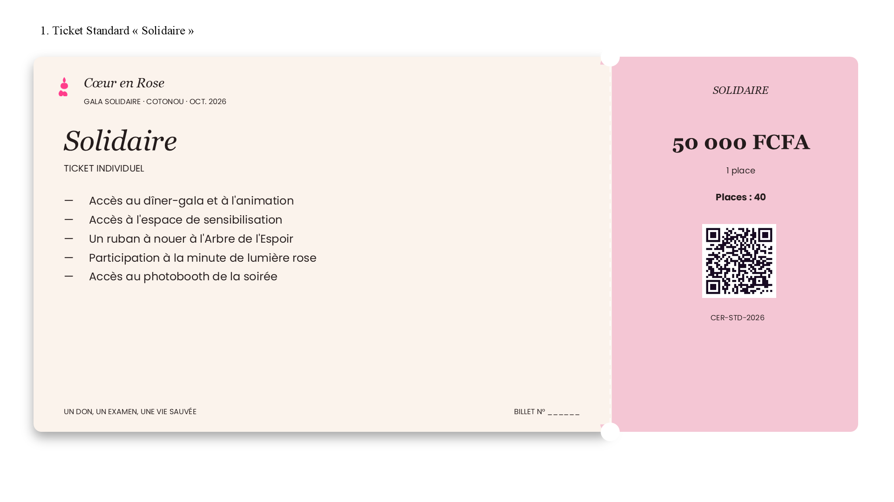

📷
Scanner un QR Code
⬇️
Télécharger le QR Code
Code QR scanné avec succès · Billet CER-STD-2026
1. Message de Remerciement (Carte de remerciement)

2. Détails du Billet (Élément associé)

Scanner un Code QR
✕
Pointez la caméra vers le code QR d'un billet.
📁
Ou importer une image de QR Code
Code QR détecté !